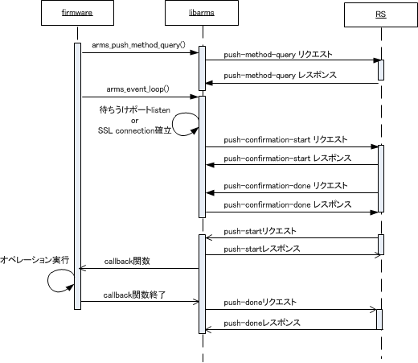

Pull を完了後、SMFv2 の Push による遠隔制御を開始するには、まず arms_push_method_query() 関数を実行し、RS との間で Push の通信方式をネゴシエーションする。 その後、 arms_event_loop() 関数を実行すると、Push 待ち受け状態に移行する。
Push の際に用いる通信は、libarms ではNAT 配下の環境に対応しており、 環境に応じて以下のいずれかの方法でPush を行う。
https-simple モード
libarms は特定のポートを待ち受け用に準備し、listen する。 RS は待ちうけポートに対してPush オペレーションを実行するたびにHTTPS で接続を行う。 Push オペレーションが終了するとHTTPS は切断される。
https-tunnel モード
NAT に対応するモード。 libarms はRS に対してHTTPS で接続した後、その接続を維持し続ける。 Push オペレーションが発生すると、その通信はすべて、維持されている接続の上で行われる。 何らかの理由で接続が切断された場合は自動的に再接続が行われる。
Pull が完了し、取得した設定情報にてサービスアダプタの初期化が完了した後、 arms_event_loop() 関数を実行すると、Push 待ち受け動作を開始する。
Push で利用可能な方式一覧の取得リクエスト(push-method-query)
SA とRS 間で利用可能なPush のメソッドを合意するためのメッセージ交換を行う。 ここで、RS からのPush に(1)https-simple 形式、(2)https-tunnel 形式のどちらを用いるかを合意して決定する。
Push 利用状態の確認メッセージ(push-confirmation)
合意したPush モードで正常にPush が行えるかどうかを確認するためのメッセージ交換。 SAからRS へのリクエスト(push-confirmation-start) に対する応答の後、 RS からSA に対するリクエスト(push-confirmation-done) を送信し、応答があることを確認する。
サービスアダプタに対するPush オペレーション
RS からサービスアダプタに対してPush オペレーション(コンフィグ反映、ステータス取得等) を行う場合、RS からlibarms に対してオペレーションの実行を指示する。 このとき、https-simple モードであればその都度SA に対してHTTPS 接続を行い、 https-tunnel モードであれば既に確立済みの接続を用いてlibarms に対して通信を行う。 libarms はコールバック関数呼び出しにより Push オペレーションを実行した後、 Push 終了メッセージをRS に対して送信する。図に示すように、Push オペレーションは非同期で実行される。
Push を行うためにhttps-simple モードと、https-tunnel モードのどちらを用いるかは、 libarms とRS 間で自動的に合意が取られる。その手順は以下の通りとなる。
libarms - RS 間は IPv4/IPv6 どちらか片方のみ使用する。これは通信手段の合意手順において push-method-query に成功したプロトコルが選択される。 push-method-query は arms_event_loop() 実行前に一度だけ行われるため、IPv4/IPv6 の切り替えは再 Pull が必要である。
https-tunnelモードは、HTTPの”Transfer-Encoding: chunked”を用いて通信を行うモードである(以後、”tunnel connection”と表記する)。
libarmsは、tunnel connectionを用いて、RSとの双方向通信を行うことでNAT環境下でのPushを実現することができる。
libarmsで利用するtunnel connectionは、HTTPプロトコルの一部拡張を行い、任意のタイミングでRS からSA に対してメッセージを投げられるようにしている。
RS が複数台存在する場合、Push に関する挙動も冗長化される。ここではその詳細動作について示す。 まず、最初に注意すべきポイントとして、RS に関する情報の一貫性の問題に注意する必要がある。 RS のアドレスリストは以下でそれぞれ異なるものが取得される可能性がある。 どのように冗長化動作するかどうかは、このアドレスリストの設定によって異なる場合がある。
(1)LS から取得するRS のリスト
Pull 時にLS より取得するアドレスのリスト。
(2)RS から取得するARMS プロキシサーバのリスト
Pull 時にRS より取得するアドレスのリスト。 push-method-query 送信、及びhttps-simple モード時のPush を行う際に利用されるRS を示す。
(3)RS から取得するARMS プロキシサーバ(接続持続型) のリスト
Pull 時にRS より取得するアドレスのリスト。 https-tunnel モード時にPush を行う際に利用されるRS を示す。
push-method-query 送信時
push-method-query を送信する際は、Pull(config-solicitation) が(1) におけるリストで何番目に位置するかを覚えておき、(2) のリストにおいて該当位置に対応するサーバから順に送信を行う。 サーバリストのうち、1 台でも送信に成功すればpush-method-query が成功したとみなされる。 (1) で取得したアドレスリストの数と(2) で取得したアドレスリストの数が一致しない場合は、順番は無視され、常にリストの最初から送信が試みられる。
push-confirmation 送信時
https-simple モードにおけるpush-confirmation は、https-simple モードの場合(2) のサーバリスト、https-tunnel モードの場合は(3) のサーバリストの「全て」に対して行われる。 これは、実際にPush が可能なサーバの一覧を正確に把握するためである。 なお、push-cofirmation の送信はシングルスレッド相当の処理となり、connect 動作において応答タイムアウト待ちとなった場合、そこで待たされることがありうる。(I/O 待ちとなったタイミングでリストの次のサーバに対する処理が行われる) また、SA のアドレス変更などによってpush-confirmation を再送信する場合は、以前にpushconfirmation が成功したサーバを起点として、前出のサーバリストの順に送信が試みられる。 必要に応じてリストの先頭に戻り、リストに羅列されているアドレスそれぞれに対して再送信が試みられる。
Push 実行時(サーバ側の挙動)
RS からPush が行われる際は、push-confirmation が成功しているサーバ(ARMS-Proxy サーバ)を覚えておき、そちらを優先的に用いてPush が行われる。 このとき、ARMS-Proxy サーバがダウンしていることをRS が検出すると、別のARMS-Proxy サーバに切り替えてPush が実行される。
push-method-query のリトライ
LS から取得したRS アドレスのリストに対するpush-method-query が全て失敗すると、所定の間隔、 回数(LS にて設定するパラメータ) でリトライを行う。 RS アドレスのリストが2 台で、リトライ回数が5 回だとすると、2 × 5 で、計10 回の接続を試みることになる。 push-method-query がリトライを含めて全て失敗すると、 arms_push_method_query() が失敗となって ARMS_EPULL を返り値として終了する。
push-confirmation のリトライ
LS から取得したRS アドレスのリストに対するpush-confirmation が全て失敗すると、所定の間隔、 回数(LS にて設定するパラメータ) でリトライを行う。 RS アドレスのリストが2 台で、リトライ回数が5 回だとすると、2 × 5 で、計10 回の接続を試みることになる。
https-tunnel モードの際は、tunnel 接続が切断されると、そのtunnel に関する再接続を行うが、他の正常なtunnel はそのまま維持される。 利用可能なtunnel が全て切断されると、push-confirmation を最初からやり直す。 このpush-confirmation も(リトライを含めて) 全て失敗すると、 arms_event_loop() が失敗となって ARMS_ETIMEOUT を返り値として終了する。
Push 待ち受け動作開始後、 arms_app_event_cb_t() によるアドレス変更検知および tunnel 全切断による push-confirmation のリトライは、合意が取れるまで終了しない (libarms 5.30 以降)。